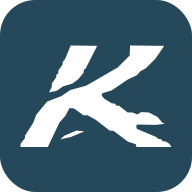

KEDRIX Quotazioni Light
AMBIENTE TEST
Accesso al gestionale attraverso Google. Le credenziali vengono richieste esclusivamente dalle pagine ufficiali di Google.
Apri KEDRIX TEST Questo accesso non contiene né archivia quotazioni, pratiche o dati Google.